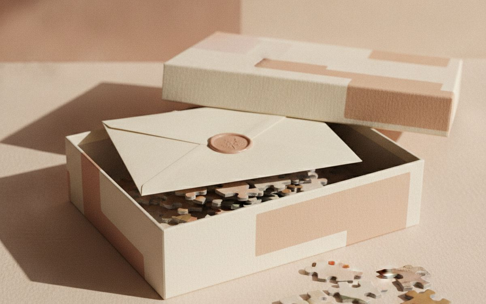
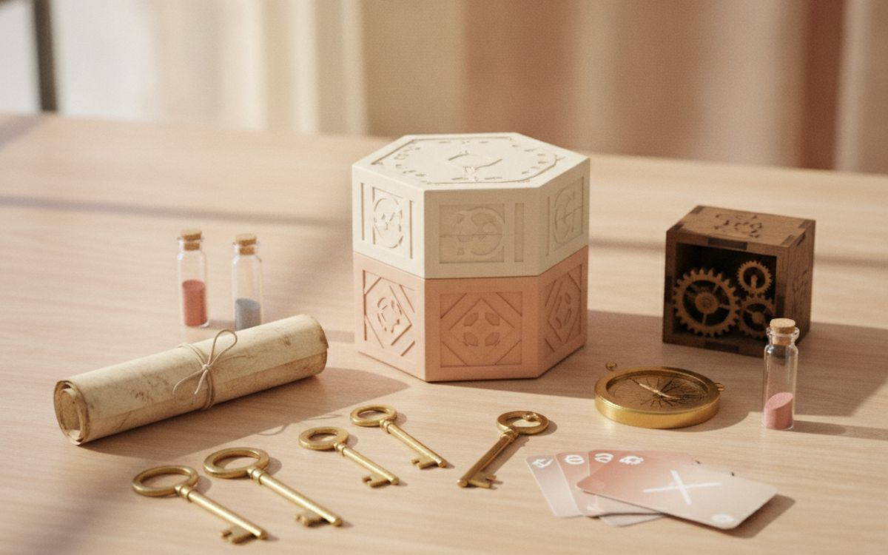
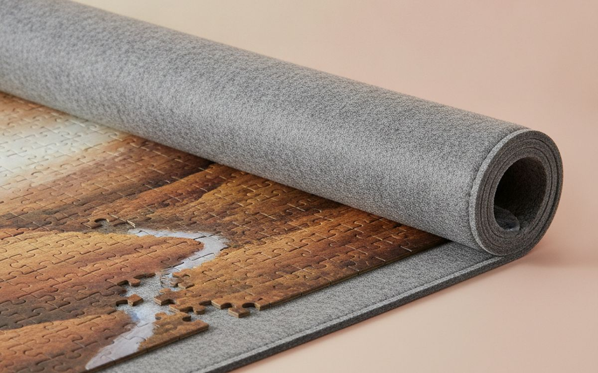
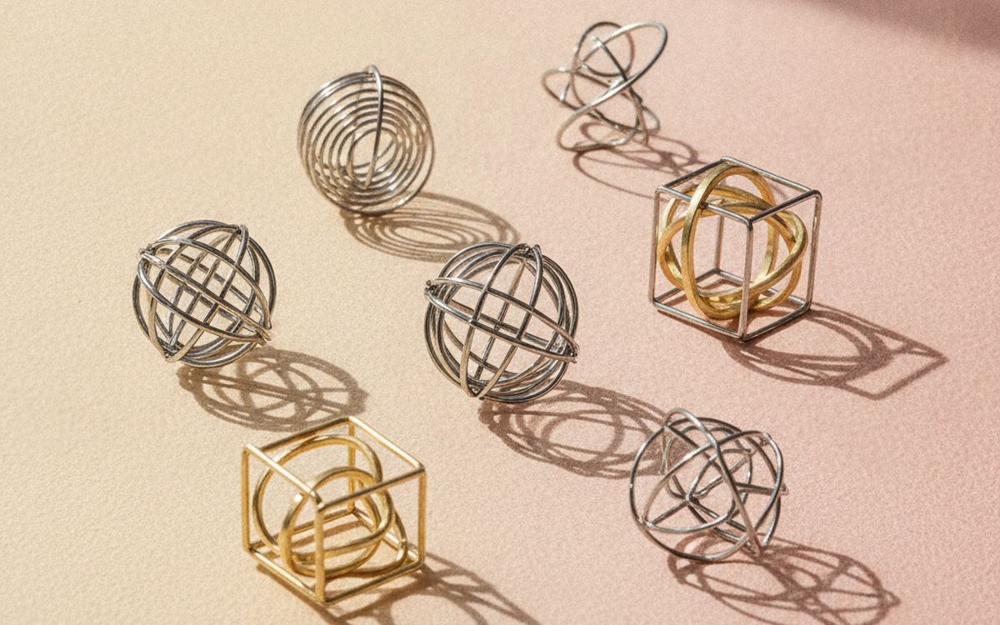
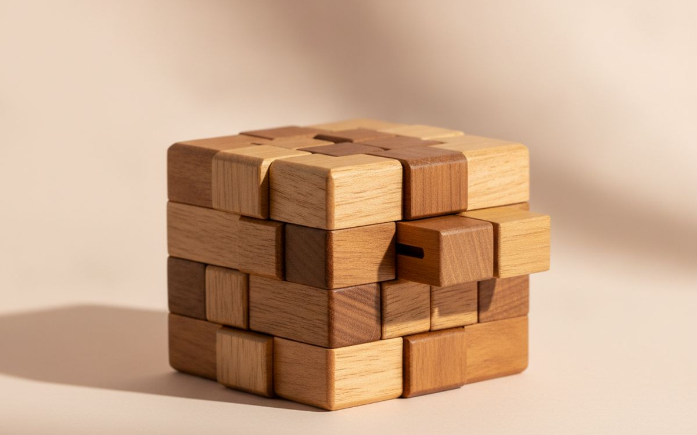
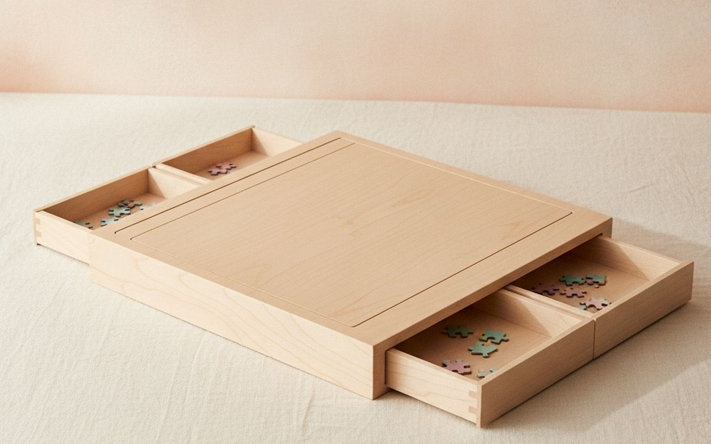
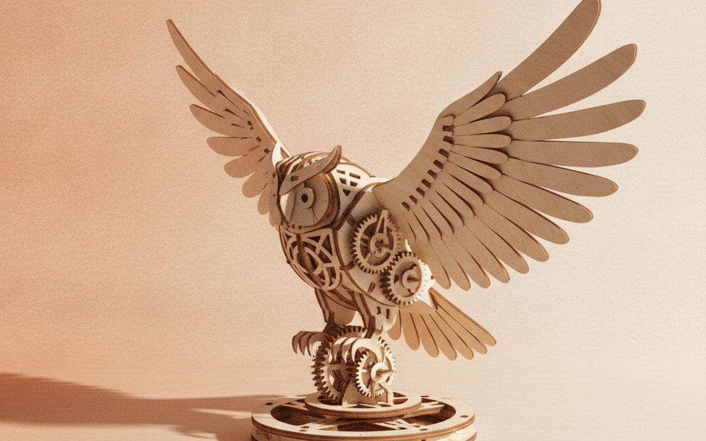
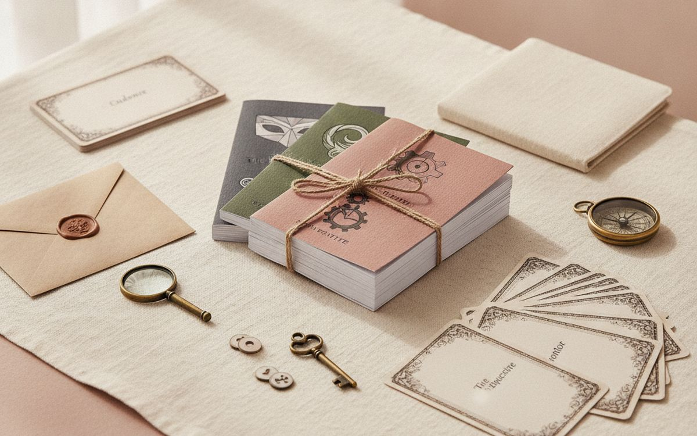

Buying for a puzzle lover is harder than it looks. They probably have the obvious 1000-piece landscape. What delights them is a puzzle with something extra: a hidden story, a secret to discover, a mechanism to work out. The best puzzle gifts give hours of thinking and a satisfying moment at the end.
This list is ordered by how much each gift gets used and enjoyed. Story puzzles and mystery jigsaws come first, then brain teasers, then the accessories serious puzzlers always want but rarely buy for themselves.
Prices below are approximate street prices at the time of writing and move around constantly, especially during sale events. Treat them as a rough band for budgeting, not a quote. Always check the live listing before you buy.
En bref
A mystery jigsaw with hidden clues
The gift with the most to discover
Transparence. Les liens de cette page sont des liens affiliés. Si vous achetez via l’un d’eux, nous pouvons percevoir une commission sans surcoût pour vous. Cela n’influence ni le contenu de cette liste ni son ordre.
Comment nous avons choisi
These picks come from puzzle communities, published reviews and long-run owner reports, cross-checked against current retail listings. We have not personally tested every item here. We favoured puzzles with good piece quality and something extra beyond a picture, and left out novelty puzzles that are hard only because they are frustrating.
En un coup d’œil
Les prix sont indicatifs au moment de la rédaction et changent souvent.
Notre sélection

01 · The gift with the most to discoverA mystery jigsaw with hidden clues
Mystery jigsaws add a story: you read a short mystery, assemble the puzzle and find the clues hidden in the image. Some series include secret envelopes, hidden riddles and extra challenges beyond the picture. They turn a solo activity into something closer to a game, and they are good for couples or families. Series like QUOKKA's hidden-secret puzzles, Buffalo Games' mystery range and similar products vary in piece quality, so check reviews. Choose the theme that suits the recipient. The case for it: more to do than a plain jigsaw, satisfying reveal at the end, and great for couples and families. The trade-off is real: piece quality varies by maker and once solved, the mystery is done, so weigh that against how often it would actually get used.
$20-40Le compromis: Piece quality varies by maker
Pourquoi il est là
- More to do than a plain jigsaw
- Satisfying reveal at the end
- Great for couples and families
Bon à savoir
- Piece quality varies by maker
- Once solved, the mystery is done

02 · Game night for puzzlersAn escape room in a box
Boxed escape room games like EXIT or Unlock! bring the escape room experience home. Players solve connected puzzles to beat the clock. They play in about an hour, suit two to four players, and each box is a one-off story. Some are single-use because you cut or fold components. The case for it: team puzzle game, one to two hours of play, and great group gift. The trade-off is real: many are single-use and difficulty varies a lot, so weigh that against how often it would actually get used. For $20-35, it is a small, low-risk addition to the list rather than a centrepiece purchase you need to think hard about.
$20-35Le compromis: Many are single-use
Pourquoi il est là
- Team puzzle game
- One to two hours of play
- Great group gift
Bon à savoir
- Many are single-use
- Difficulty varies a lot

03 · Pausing a puzzleA roll-up puzzle mat
A 1000-piece puzzle takes over the dining table for a week. A roll-up felt mat lets you roll the half-finished puzzle away without breaking it. Every jigsaw fan wants one. Check it fits the puzzle size they usually do. The case for it: frees up the table, protects progress, and cheap and practical. The trade-off is real: rolling can shift pieces a little and check the size, so weigh that against how often it would actually get used. Priced around $15-30, it is easy to justify even if it only ends up getting occasional rather than daily use.
$15-30Le compromis: Rolling can shift pieces a little
Pourquoi il est là
- Frees up the table
- Protects progress
- Cheap and practical
Bon à savoir
- Rolling can shift pieces a little
- Check the size

04 · Desk puzzlesA set of metal brain teasers
Metal disentanglement puzzles are small, cheap and addictive. Separate the rings, free the heart, and try to put them back. A set of several difficulties lives on a desk or coffee table and gets picked up by every visitor. Good stocking stuffer. The case for it: cheap and addictive, small, and gets everyone involved. The trade-off is real: some are frustratingly hard and cheap sets can have rough edges, so weigh that against how often it would actually get used. At $10-25, it earns its place on this list without asking for a big up-front commitment either way.
$10-25Le compromis: Some are frustratingly hard
Pourquoi il est là
- Cheap and addictive
- Small
- Gets everyone involved
Bon à savoir
- Some are frustratingly hard
- Cheap sets can have rough edges

05 · A slow, satisfying challengeA wooden puzzle box
Japanese-style puzzle boxes open only after a sequence of sliding panels. They are beautiful objects and satisfying to solve, and you can hide a small gift or note inside. Choose a sensible number of moves; very complex boxes can take hours. The case for it: beautiful object, can hold a hidden gift, and satisfying to solve. The trade-off is real: once solved, less replay value and cheap ones stick or jam, so weigh that against how often it would actually get used. For $20-60, it is a small, low-risk addition to the list rather than a centrepiece purchase you need to think hard about.
$20-60Le compromis: Once solved, less replay value
Pourquoi il est là
- Beautiful object
- Can hold a hidden gift
- Satisfying to solve
Bon à savoir
- Once solved, less replay value
- Cheap ones stick or jam

06 · Serious jigsaw fansA puzzle board with sorting trays
Serious puzzlers love a portable board with drawers or trays for sorting pieces by colour or edge. It makes puzzling tidier and portable. A bigger gift for someone who does puzzles every week. The case for it: sort pieces easily, move the puzzle anywhere, and lasts for years. The trade-off is real: takes storage space and check the size fits common puzzles, so weigh that against how often it would actually get used. Priced around $40-80, it is easy to justify even if it only ends up getting occasional rather than daily use.
$40-80Le compromis: Takes storage space
Pourquoi il est là
- Sort pieces easily
- Move the puzzle anywhere
- Lasts for years
Bon à savoir
- Takes storage space
- Check the size fits common puzzles
07 · Daily puzzlingA book of logic puzzles
Logic grid puzzles, nonograms, kakuro and cryptic crosswords give a daily puzzle habit. A good book lasts months. Choose the type they enjoy, and the right difficulty. The case for it: months of puzzling, portable, and cheap. The trade-off is real: must match the right puzzle type and some books have errors, so weigh that against how often it would actually get used. At $10-20, it earns its place on this list without asking for a big up-front commitment either way. As with anything on this list, check the exact listing details and current price before adding it to a cart.
$10-20Le compromis: Must match the right puzzle type
Pourquoi il est là
- Months of puzzling
- Portable
- Cheap
Bon à savoir
- Must match the right puzzle type
- Some books have errors

08 · Makers and tinkerersA 3D wooden mechanical model kit
Laser-cut wooden kits from brands like ROKR build into working clocks, music boxes and marble runs. They take several evenings and end with a moving object on the shelf. Great for people who like to build as well as solve. The case for it: hours of building, moving finished model, and good for adults and teens. The trade-off is real: small parts break easily and some models need wax on gears, so weigh that against how often it would actually get used. For $25-60, it is a small, low-risk addition to the list rather than a centrepiece purchase you need to think hard about.
$25-60Le compromis: Small parts break easily
Pourquoi il est là
- Hours of building
- Moving finished model
- Good for adults and teens
Bon à savoir
- Small parts break easily
- Some models need wax on gears
09 · Keeping a finished favouriteA puzzle glue and frame kit
Some puzzles are too beautiful to take apart. Puzzle glue and a frame turn a finished puzzle into wall art. A thoughtful add-on to any jigsaw gift. The case for it: keeps a favourite puzzle, turns it into decor, and cheap. The trade-off is real: messy if applied thickly and check frame size, so weigh that against how often it would actually get used. Priced around $10-25, it is easy to justify even if it only ends up getting occasional rather than daily use. None of that makes it essential for everyone reading this, only worth knowing about if the description above matches how you actually use the space.
$10-25Le compromis: Messy if applied thickly
Pourquoi il est là
- Keeps a favourite puzzle
- Turns it into decor
- Cheap
Bon à savoir
- Messy if applied thickly
- Check frame size

10 · Hosting a partyA murder mystery game kit
For puzzle lovers who host, a murder mystery kit turns dinner into a detective game. Everyone gets a character, clues come out over the evening, and the group solves the crime. It is a great gift for someone who likes to entertain. The case for it: turns a dinner into a game, memorable evening, and great group gift. The trade-off is real: needs a set number of guests and single-use story, so weigh that against how often it would actually get used. At $20-40, it earns its place on this list without asking for a big up-front commitment either way.
$20-40Le compromis: Needs a set number of guests
Pourquoi il est là
- Turns a dinner into a game
- Memorable evening
- Great group gift
Bon à savoir
- Needs a set number of guests
- Single-use story
Questions fréquentes
What is a good gift for someone who loves jigsaws?
A mystery jigsaw with hidden clues, or a roll-up mat or sorting board.
Are escape room games reusable?
Some are, but many are single-use because you cut or mark components.
What puzzle gifts suit the whole family?
Mystery jigsaws, escape room boxes and murder mystery kits.
How do I pick the right difficulty?
Check the piece count and reviews. For jigsaws, 500-1000 pieces suits most adults.
Les offres du jour
Voyez ce qui est en promotion en ce moment.
Offres →← Tous les guides
En tant que affilié AliExpress, nous percevons une commission sur les achats éligibles. Les prix et la disponibilité sont exacts à la date de publication et peuvent changer.